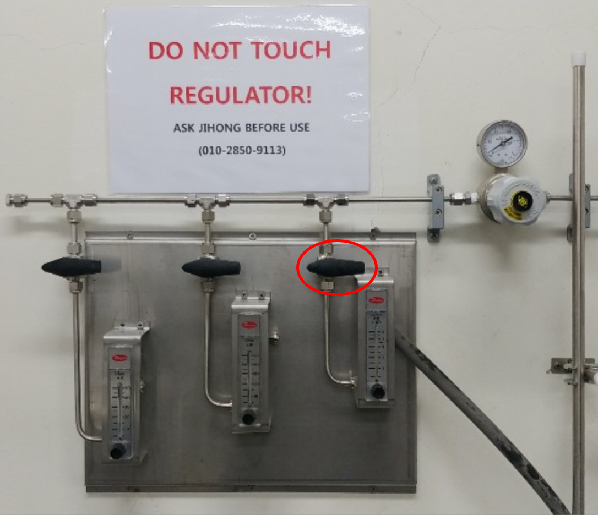
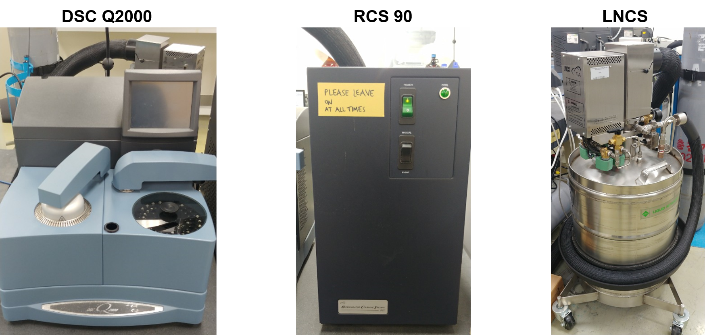

Before using the DSC, please turn on the red circled nitrogen valve.

Our DSC Q2000 is located in room 301. We have two cooling systems the Refrigerated Cooling System and Liquid Nitrogen Cooling System. RCS90 was equipped with DSC for general purposes.
Note Operating range: -90 to 550°C, Recommendation range: -80 to 400°C
For special purposes, you can change the cooler to LNCS and please contact charger or engineer from TA. Generally, the cooler should change to LNCS system and liquid nitrogen should be filled from a liquid nitrogen tank in room 301 that shows in the image below.

Note: You should fill this tank before use.